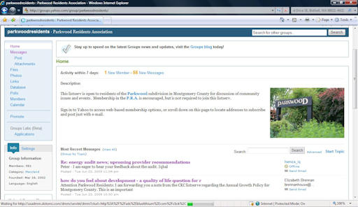

|
|
PARKWOOD RESIDENTS ASSOCIATION
SUMMER 2009 NEWSLETTER
|
|
|
Next Meeting:
Tuesday, July 14, 2009 at 7:30
Kensington Parkwood Elementary School
|
LETTER FROM THE PRESIDENT
Ladies and Gentlemen,
Summer arrived quite brilliantly yesterday after many weeks of rain. I hope that you and your families and friends enjoy Independence Day celebrations amidst similar weather.
The next meeting of the Parkwood Residents Association will take place on Tuesday, July 14th, at 7:30 p.m., in the multi-use room (aka the cafeteria), on the lower level at Kensington Parkwood Elementary. A number of items on the agenda will focus on future transportation issues as they relate to commuting, parking in Kensington, and improving pedestrian safety around Kensington Parkwood Elementary School. An update will also be provided on the work of the Coalition of Military Medical Center Neighbors, to which the PRA belongs.
In terms of commuting, according to an update from the Montgomery County Department of Transportation, the Cedar Lane Bridge will be closed beginning in June of 2011, for three months while renovation is completed. Additional information is enclosed in the newsletter.
In June the Montgomery County Council passed an ordinance that will restrict parking in residential neighborhoods countywide. The ordinance prohibits the parking of trailers, boats and large commercial vehicles on neighborhood streets. It was enacted to improve the safety of pedestrians on neighborhood streets by eliminating the visual obstructions that these devices create. Additional information on the ordinance will be provided at the meeting on July 14th.
Improving pedestrian safety around Kensington Parkwood Elementary School is an ongoing issue that has received the support of our Maryland delegation that includes Senator Richard Madaleno, and Delegates Al Carr, Ana Sol Gutierrez and Jeff Waldstreicher. They have communicated to the Montgomery County DOT that they fully support the community’s efforts to improve safety through traffic calming devices.
The Coalition of Military Medical Center Neighbors has been working tirelessly to ensure that traffic mitigation measures and quality of life issues are comprehensively addressed by leaders at the local, state and national levels as they pertain to the opening of the new National Naval Military Medical Center in Bethesda in September 2011. Congressman Chris Van Hollen (D-MD) has introduced legislation to fund Metro station improvements and support enhancements to bike and pedestrian paths surrounding the base. However, an immediate challenge lies in getting county and state highway administration leaders fully engaged in the process of seeking more land from the Navy and additional funding for roadway improvements from the federal government. Of the more than $200 million needed to make the traffic intersection improvements surrounding the base, only slightly more than $30 million has been secured. The CMMCN continues to push for greater involvement by leadership at all levels of government on behalf of our communities. Additional information will be provided at the July 14th meeting.
Enjoy your summer.
Sincerely,
Bailey Condrey, PRA President
|
PRA BEAUTIFICATION COMMITTEE (PRABC) REPORT
GAIL DALFERES CONDREY
PRA BEAUTIFICATION COMMITTEE CHAIR
|
I am writing to update you on the activity of the Beautification Committee. You may have noticed that some of the plants at the new Wildwood garden area did not survive the February deep freeze, but others have come back heartily. The committee has added a mix of colorful annuals to the Wildwood landscape, weeded and re-edged the borders to help improve the look until the perennials become more established. Kira Leuders is donating a replacement for one of the butterfly bushes that did not survive. A load of wood chips was delivered June 19 and should be distributed by volunteers before this newsletter reaches you. If you have an ornamental grass or liriopi plants to donate let me know.
Otherwise the focus is on maintenance this year. Clare and Jim Murphy have led the Saul Road Island work while Keith Herold, Bailey and I have spent time at Wildwood. We will be
|
|
mulching the Saul Spruce tree and bushes leading up to the junction of Saul and Cedar. Talk of additional community projects has not produced volunteers needed to maintain new areas, but we will continue to look for ways to expand the beautification of the community in sustainable ways as the summer unfolds.
I leave you with one final thought for my fellow dog owners. With Rock Creek feeding the Chesapeake Bay it is important to clean up after your pets not only on the streets of the neighborhood but also along the paths of the park. Dog waste bags/dispensers are on deck for installation at key areas leading into the park near the county maintained trash receptacles. Help keep our local community clean and safe while improving the health of the larger community – pick up after your pets at all times. Thanks everyone.
Hope to see you soon!
|
* * * * * *
Have a New Neighbor?
The PRA is looking for ways to reach out to newcomers in the neighborhood. If you have a new neighbor (or recently moved to the neighborhood yourself), please contact Welcome Committee Chair Kathy Byars to have Kathy or one of her volunteers drop off a PRA welcome packet. Contact Kathy at (301) 530-9441 or send an email to: kathybyars@mris.com.
CEDAR LANE BRIDGE UPDATE
As noted in the President’s Letter, Montgomery County is moving forward with plans to renovate the Cedar Lane Bridge over Rock Creek. The Montgomery County Department of Transportation (MC DOT) is working on a preliminary design for the reconstruction, with work scheduled for Summer 2011 (June through September). At this time, the MC DOT will recommend to the Director of Transportation that construction be completed with a complete roadway closure of Cedar Lane during summer months (when school is closed). According to the Brian Copley, a manager with MC DOT, the Department is recommending closure of the bridge based on the following factors:
- In response to a survey conducted among 72 homeowners living in the vicinity of the Cedar Lane Bridge, 43 percent opted for full closure, 28 percent opted for partial closure and 29 percent had no opinion (had some other comment or concern (i.e. wider sidewalk, truck restrictions, coordinate with SHA in regards to MD 355–Cedar Lane intersection improvements, etc.).
- The Montgomery County Fire and Rescue Services, Montgomery County Police Department, and the Maryland-National Capital Park and Planning (M-NCPPC) Police all voiced support for full roadway closure.
The proposed detour route is Cedar Lane – Summit Avenue – Knowles Avenue – Connecticut Avenue – Jones Bridge Road – Rockville Pike – Cedar Lane. MC DOT will coordinate with transit officials to reroute Ride On Route 34 during construction. According to Mr. Copley, an updated design newsletter is being drafted and will be sent to homeowners in the next several weeks. It will also be posted online at http://www2.montgomerycountymd.gov/DOT-DTE/Common/home.aspx. A public hearing to discuss the DOT’s recommendations is scheduled for June 2010.
* * * * * *
REPORT FROM THE COALITION OF KENSINGTON COMMUNITIES (CKC)
LIZ BRENNAN, CKC REPRESENTATIVE
CKC, of which PRA is a member, is a unified body of area civic associations and townships founded to enhance the quality of life in our communities. Towards this end, we work with local government agencies and departments to address issues of urban design, growth and development, recreation, transportation management, pedestrian safety, and neighborhood preservation in the greater Kensington area.
CKC representatives have mostly been focused on the Kensington Sector Plan for the past six months. The Planning Board staff presented their recommendations to the Planning Board in early June. Details on the recommendations can be found at:
http://www.montgomeryplanning.org/community/kensington/index.shtm. The community is invited to provide feedback. The next hearing is scheduled for July 9. Please note that the Kensington Sector Plan includes areas outside of the Town of Kensington and so all Kensington residents are encouraged to review and respond.
At the March meeting CKC leaders met with At-Large County Councilman Marc Elrich to discuss the county budget process, the annual growth policy and transportation concerns. The Parkwood representative Liz Brennan reported that vandalism and petty crime appeared to be on the rise in her neighborhood and urged that funding for police and fire safety be protected.
CKC launched its website in May. You may review information about the CKC at: http://www.ckckensington.net/
If you have any questions about the CKC, please do not hesitate to contact our representative Liz Brennan at:
PARKWOOD’S VIRTUAL COMMUNITY
Come join Parkwood’s "other" community! Get connected to your neighbors on the PRA listserv on Yahoo! Groups and on the PRA’s website at
www.parkwoodresidents.org.

Almost half of Parkwood households are connected to each other via the PRA listserv. This e-mail group, moderated by Chris Dewey, is open to all residents of Parkwood, and a great way to plan community events and share information. This listserv can save the PRA funds and make Parkwood a safer place to live! Recent topics have run the spectrum and include recommendations for nearby pools and gyms, a discussion of the new monthly charge for EZ Pass transponders, a call for comments to the MoCo Planning Board on the county’s growth policy, and a discussion of home energy audits.
Sign on to the listserv and get your neighbor to as well! To subscribe to the listserv, send a blank message to: parkwoodresidents-subscribe@yahoogroups.com. You will receive a confirmation message when you are subscribed. Do not write anything in the subject or body of the message. It will not be seen by anyone and you will not get a response.
Maintained by PRA webmaster Peter Mansbach, the PRA website includes a wealth of information about our community and the PRA, including contact information for local officials, minutes from past PRA meetings, past issues of the newsletter, maps of recent crimes in the community, and other great resources.
HAVE YOU PAID YOUR 2009 PRA MEMBERSHIP DUES YET?
If you missed joining up or renewing your membership in January, we encourage you to send in your application. As a member, you’ll support PRA’s efforts to represent the Parkwood community, share information through meetings and this newsletter, and exchange ideas through our listserv, which is free to everyone in Parkwood, member or not. Please support our efforts for modest dues of $10 a year per household.
2008 Membership/Renewal Application – Annual Dues per household: $10
Please mail or deliver your 2009 PRA membership renewal dues to: Kitty Stone, 4313 Clearbrook Lane, Kensington, MD 20895. Please make check payable to: Parkwood Residents Association and print your information below:
Name: _________________________________________
Address: __________________________________________________________________
Phone Numbers: (daytime) ____________________________ (evening) _____________________
Email: _________________________________ Member of PRA Listserv? ( Yes / No ) (not required for PRA membership)
Enclosed:
____ $10 membership dues
____ $______ donation to Beautification Committee (optional)
Connect with your neighbors at www.parkwoodresidents.org
and ParkwoodResidents@yahoogroups.com
Printed on 100% Recycled Paper